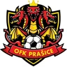

Posledný zápasPrípravka U11

OFK PrašicedomáciVýsledok 10:4
 Preseľany U11hostia
Preseľany U11hostiaPrehrapolčas 4:2
Návrh webu · nie je to oficiálna stránka klubu
III. liga prípraviek U11, 4. miesto zo 6
Posledný zápasPrípravka U11

OFK PrašicedomáciVýsledok 10:4
Preseľany U11hostiaPrehrapolčas 4:2
4–1–5výhry, remízy a prehry vo všetkých súťažiach, skóre 52:50
Ďalšie zápasy zatiaľ nie sú vyžrebované.
III. liga prípraviek U11
| # | Tím | Z | V | R | P | Skóre | B |
|---|---|---|---|---|---|---|---|
| 1 | 10 | 10 | 0 | 0 | 162:27 | 30 | |
| 2 | OFK Prašice | 10 | 8 | 0 | 2 | 88:62 | 24 |
| 3 | 10 | 5 | 0 | 5 | 48:65 | 15 | |
| 4 | 10 | 4 | 1 | 5 | 52:50 | 13 | |
| 5 | 10 | 2 | 0 | 8 | 31:128 | 6 | |
| 6 | 10 | 0 | 1 | 9 | 19:68 | 1 |
Hráči, ktorí v kalendárnom roku 2026 nastúpili alebo boli v nominácii na zápas (podľa Sportnetu). Pri mládeži uvádzame len mená.